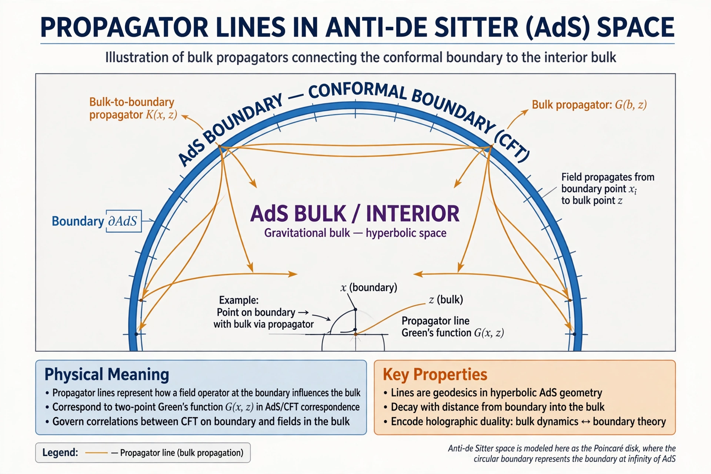

From Wikipedia, the free encyclopedia

Quantum field theory in anti-de Sitter (AdS) space concerns the behavior of quantum fields propagating on the fixed, negatively curved background of anti-de Sitter space. Because AdS has a timelike boundary at spatial infinity, it acts much like a finite box: light can reach the boundary and return in finite coordinate time, so boundary conditions must be specified for fields to evolve consistently.
A free scalar field of mass m in AdSd+1 falls off near the boundary with two characteristic exponents, Δ±. The Breitenlohner–Freedman bound, m²L² ≥ −d²/4, guarantees stability even for slightly tachyonic masses. For masses in a certain window, both falloffs are normalizable and two different quantizations are possible — the seed of the two conformal field theories related by a Legendre transform of the generating functional.
In the AdS/CFT correspondence, a bulk field corresponds to a local operator of the boundary conformal field theory, and its non-normalizable mode acts as the source for that operator. The GKPW prescription (after Gubser, Klebanov, Polyakov, and Witten) equates the bulk partition function with the CFT generating functional, so bulk two-point functions ("Witten diagrams") compute boundary correlation functions. This machinery makes AdS field theory a computational tool for strongly coupled quantum field theories that resist ordinary perturbative methods.